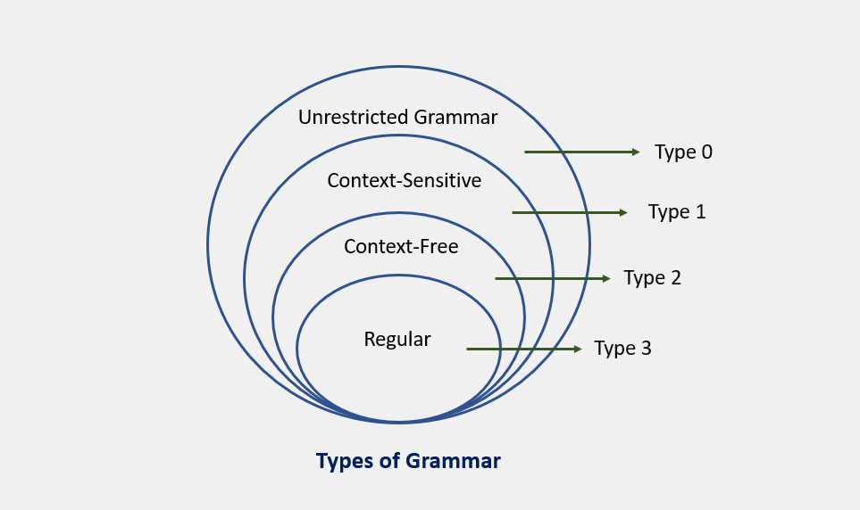
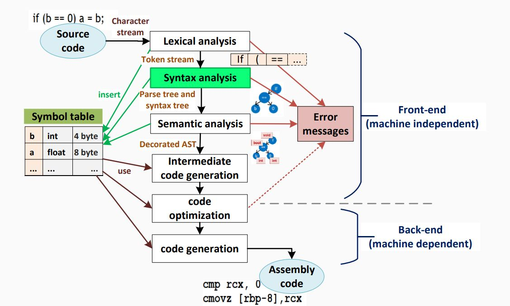
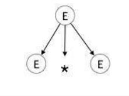
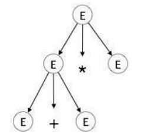
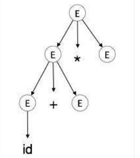
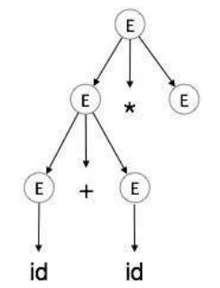
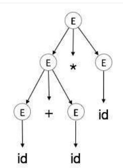
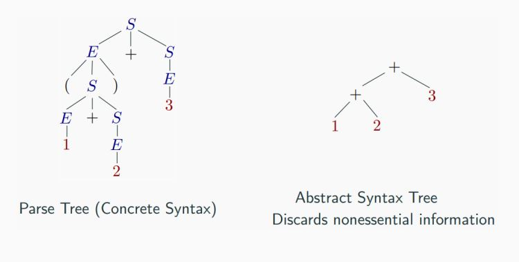
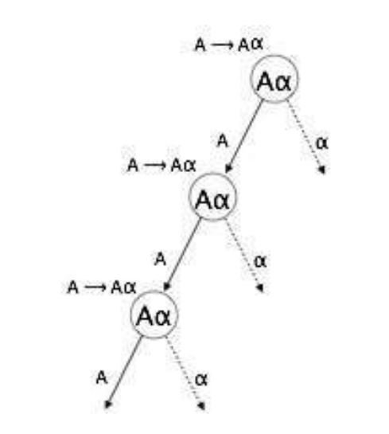

Syntax Analysis

When an input string (source code or a program in some language) is given to a compiler, the compiler processes it in several phases, starting from lexical analysis (As mentioned scans the input and divides it into tokens) to target code generation.
Syntax analysis or parsing constitutes the second phase within the compiler's workflow. This chapter delves into fundamental concepts crucial for constructing a parser.
As previously explored, a lexical analyzer proficiently identifies tokens using regular expressions and pattern rules. However, its capacity is constrained when it comes to scrutinizing the syntax of a given sentence, particularly in tasks involving balancing tokens like parentheses. To overcome this limitation, syntax analysis employs context-free grammar (CFG), a construct recognized by push-down automata.
Syntax Analysis, situated after the lexical analysis, scrutinizes the syntactical structure of the input. It verifies whether the provided input adheres to the correct syntax of the relevant programming language. This verification process involves constructing a data structure known as a Parse tree or Syntax tree. By leveraging the predefined Grammar of the language and the input string, the parse tree is crafted. Successful derivation of the input string from this syntax tree indicates correct syntax usage. Conversely, any deviation triggers an error report from the syntax analyzer.
Syntax analysis, often referred to as parsing, is a critical phase in compiler design where the compiler assesses whether the source code aligns with the grammatical rules of the programming language. Typically occurring as the second stage in the compilation process, following lexical analysis, the primary objective is to generate a parse tree or abstract syntax tree (AST). This hierarchical representation mirrors the grammatical structure of the program encapsulated in the source code.
So, let's to Learn...
CFG, on the other hand, is a superset of Regular Grammar, as depicted below:

which are fully explained in the next lesson
Syntax Analyzers
A syntax analyzer, also known as a parser, receives input in the form of token streams from a lexical analyzer. Its primary role is to examine the source code (presented as a token stream) against production rules, aiming to identify and flag any errors within the code. The outcome of this process is the creation of a parse tree.
In essence, the parser performs two essential tasks: 1. parsing the code to detect errors 2. generating a parse tree as the result of this analysis.
It's important to note that parsers are designed to handle the entire code, even in the presence of errors. To achieve this, parsers employ error recovery strategies, which we will delve into later in this chapter. These strategies enable parsers to effectively navigate and process code, providing a comprehensive analysis and aiding in the identification and handling of errors within a program.

Let's Dive into Derivations!
In the world of compiler design, there are two types of derivations that we often encounter: left-most and right-most derivations. These are like the two sides of a coin, each with its own unique characteristics.
Production Rules
Let's start with some production rules. These are like the recipes that our compiler follows to understand and process the input string. Here are some example production rules:
And here's the input string that we'll be working with: id + id * id
Left-most Derivation
Now, let's see how the compiler would process this input string using a left-most derivation. This is like saying, "Hey compiler, let's start from the left and work our way to the right." Here's how it looks:
Notice that the left-most non-terminal is always processed first. It's like the compiler is saying, "I'll handle the leftmost thing first, then move on to the next one on the left."
Right-most Derivation
Now, let's see how the compiler would process the same input string using a right-most derivation. This is like saying, "Hey compiler, let's start from the right and work our way to the left." Here's how it looks:
And that's it! We've now explored both left-most and right-most derivations. Remember, these are just the two sides of a coin. Depending on the parsing strategy that the compiler uses, it might prefer one side over the other.
Understanding Parse Trees
Parse trees are like a roadmap for your compiler. They are graphical representations of a derivation, showing how strings are derived from the start symbol. The start symbol becomes the root of the parse tree, and it's great to visualize this process.
Let's take a look at an example using the left-most derivation of a + b * c.
The Left-most Derivation
For example for write parse tree for this left-most derivation:
Step-by-Step Parse Tree Construction
Now, let's build the parse tree step-by-step:
step 1: E → E * E

step 2: E → E + E * E

step 3: E → id + E * E

step 4: E → id + id * E

step 5: E → id + id * id

Parse Tree Characteristics
In a parse tree, we have:
- All leaf nodes are terminals.
- All interior nodes are non-terminals.
- In-order traversal gives the original input string.
- The parse tree shows the associativity and precedence of operators. The deepest sub-tree is traversed first, so the operator in that sub-tree gets precedence over the operator in the parent nodes.
Ambiguity in Grammar
A grammar is said to be ambiguous if it has more than one parse tree (left or right derivation) for at least one string. For example, consider the following grammar:
For the string id + id – id, the above grammar generates two parse trees. The language generated by an ambiguous grammar is said to be inherently ambiguous. While no method can automatically detect and remove ambiguity, it can be manually removed by re-writing the whole grammar without ambiguity, or by setting and following associativity and precedence constraints.
in another word:
Parse trees and derivations are key concepts in compiler design. They help us understand how to process and evaluate expressions.
Context-Free Grammar and Parse Trees
A context-free grammar (CFG) is a type of grammar where every production rule is of the form A → α, where A is a single non-terminal and α is a string of terminals and/or non-terminals.
A parse tree, on the other hand, is a tree structure that represents the syntactic structure of a string according to some grammar. In the context of a CFG, a parse tree is a derivation or parse tree for G if and only if it has the following properties:
- The root is labeled
S. - Every leaf has a label from
T ∪ {ε}. - Every interior vertex (a vertex that is not a leaf) has a label from
V. - If a vertex has label
A ∈ V, and its children are labeled (from left to right)a1, a2, ..., an, thenPmust contain a production of the formA → a1a2...an. - A leaf labeled
εhas no siblings, that is, a vertex with a child labeledεcan have no other children.
Example of Derivation (Parse) Trees
Consider the following grammar and string:
- Grammar:
E → E + E | E * E | -E | (E) | id - String:
-(id + id)
The leftmost derivation for this grammar and string is:
The rightmost derivation for the same grammar and string is:
Both derivations result in the same parse tree.
Derivation and Parse Trees
There is a many-to-one relationship between derivations and parse trees. Indeed, no information on the order of derivation steps is associated with the final parse tree.
Parse trees and abstract syntax tree (AST)
An AST does not include inessential punctuation and delimiters (braces, semicolons, parentheses, etc.).

Understanding Associativity
Associativity is like a rule that helps us decide the order of operations when an operand has operators on both sides. If the operation is left-associative, the operand will be taken by the left operator. If it's right-associative, the right operator will take the operand.
Left Associative Operations
Operations like Addition, Multiplication, Subtraction, and Division are left associative. This means that when an expression contains more than one of these operations, the operations are performed from left to right.
For example, if we have an expression like id op id op id, it will be evaluated as (id op id) op id. To illustrate, consider the expression (id + id) + id.
Right Associative Operations
Operations like Exponentiation are right associative. This means that when an expression contains more than one of these operations, the operations are performed from right to left.
For example, if we have an expression like id op (id op id), it will be evaluated as id op (id op id). To illustrate, consider the expression id ^ (id ^ id).
Important Points
Here are a few key points to remember about associativity:
- All operators with the same precedence have the same associativity. This is necessary because it helps the compiler decide the order of operations when an expression has two operators of the same precedence.
- The associativity of postfix and prefix operators is different. The associativity of postfix is left to right, while the associativity of prefix is right to left.
- The comma operator has the lowest precedence among all operators. It's important to use it carefully to avoid unexpected results.
Precedence
Precedence is like a rule that helps us decide which operation to perform first when two different operators share a common operand. For example, in the expression 2+3*4, both addition and multiplication are operators that share the operand 3.
By setting precedence among operators, we can easily decide which operation to perform first. Mathematically, multiplication (*) has precedence over addition (+), so the expression 2+3*4 will always be interpreted as (2 + (3 * 4)).
Left Recursion
Left recursion is a situation where a grammar has a non-terminal that appears as the left-most symbol in its own derivation. This can cause problems for top-down parsers, which start parsing from the start symbol and can get stuck in an infinite loop when they encounter the same non-terminal in their derivation.
For example, consider the following grammar:
A => Aα | βS => Aα | βA => Sd
The first example is an example of immediate left recursion, where A is any non-terminal symbol and α represents a string of non-terminals.
The second example is an example of indirect left recursion.

In a top-down parser, it will first parse A, which in turn will yield a string consisting of A itself and the parser may go into an infinite loop.
By understanding and managing precedence and left recursion, we can make sure that our compiler can correctly parse and evaluate expressions.
Summary
Understanding Syntax Analyzers
Syntax analyzers play a crucial role in the field of compiler design. They validate the syntax of the source code written in a programming language using a component called a parser. The aim is to test whether a source code (𝑤) belongs to a programming language (𝐿) with grammar (𝐺). The answer is a simple "yes" or "no".
However, the syntax analyzer in a compiler must do more than just validate the syntax. It must also generate a syntax tree and handle errors gracefully if the string is not in the language.
The parser uses the stream of tokens produced by the lexical analyzer to create a tree-like intermediate representation that depicts the grammatical structure of the token stream. The parser also reports any syntax errors in an intelligible fashion and recovers from commonly occurring errors to continue processing the remainder of the program.
Prerequisites for Syntax Analysis
Syntax analysis requires two main components:
- An expressive description technique to describe the syntax.
- An acceptor mechanism to determine if the input token stream satisfies the syntax description.
For lexical analysis, regular expressions are used to describe tokens, and finite automata is used as an acceptor for regular expressions.
Limitations of Regular Expressions for Syntax Analysis
General-purpose programming languages like C, C++, C#, Java, etc., are not regular languages, so they cannot be described by regular expressions. Consider nested constructs (blocks, expressions, statements), and you'll see that regular expressions fall short. For example, the syntax of the '{' construct in the second code snippet can be described with a language like 𝐿 = {︀𝑎𝑛𝑏𝑛|𝑛 ≥ 0}, which is a context-free language, not regular.
Non-Context-Free Language Constructs
Not all constructs found in typical programming languages can be specified using Context-Free Grammar (CFG) grammars alone. For instance, the declaration of identifiers before their use and checking that the number of formal parameters in the declaration of a function agrees with the number of actual parameters are examples of constructs that cannot be specified using CFG grammars alone.
Syntax Analysis Scope
Syntax analysis cannot check whether variables are of types on which operations are allowed, whether a variable has been declared before use, or whether a variable has been initialized. These issues will be handled in the semantic analysis phase. For now, let's focus on syntax analysis.
Context-Free Grammars for Programming Languages
Programming languages grammar uses Context-Free Grammar (CFG) instead of regular grammar to precisely describe the syntactic properties of the programming languages. A specification of the balanced-parenthesis language using context-free grammar is a good example of this.
Example
Unambiguous, with precedence and associativity rules honored:
Ambiguous:
E -> E + E | E * E | (E) | num | id
Unambiguous:
E -> E + T | T
T -> T * F | F
F -> (E) | num | id
For another example for operation(+, -, *, /, ^), we have:
E -> E + T | T
T -> T * F | T * F | F
F -> G ^ F | G
G -> num | id | (E)
E
/|\
/ | \
/ | \
E + T
| /|\
| / | \
num T * F
| | |
1 F G
/|\ |
G ^ F num
| | |
num G 3
| |
2 num
|
3